2022 National 5 Mathematics - Paper 2 questions
Source: Scottish Qualifications Authority (SQA) / Qualifications Scotland. This is a StemInteract HTML companion, not an official HTML edition. Selectable text is supplied alongside original page images. Use the images or original PDF for equations, powers, fractions, vector notation, tables and diagrams; text extraction cannot fully preserve mathematical layout.
Jump to a question
PDF page 1
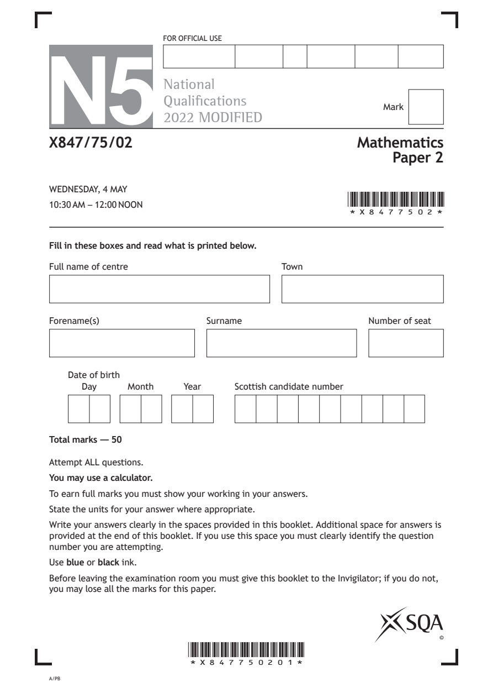
Selectable page text
FOR OFFICIAL USE
N5
National
Qualications
Mark
2022 MODIFIED
X847/75/02 Mathematics
Paper 2
WEDNESDAY, 4 MAY
10:30 AM – 12:00 NOON
*X8477502*
Fill in these boxes and read what is printed below.
Full name of centre Town
Forename(s) Surname Number of seat
Date of birth
Day Month Year Scottish candidate number
Total marks — 50
Attempt ALL questions.
You may use a calculator.
To earn full marks you must show your working in your answers.
State the units for your answer where appropriate.
Write your answers clearly in the spaces provided in this booklet. Additional space for answers is
provided at the end of this booklet. If you use this space you must clearly identify the question
number you are attempting.
Use blue or black ink.
Before leaving the examination room you must give this booklet to the Invigilator; if you do not,
you may lose all the marks for this paper.
©
*X847750201*
A/PBPDF page 2
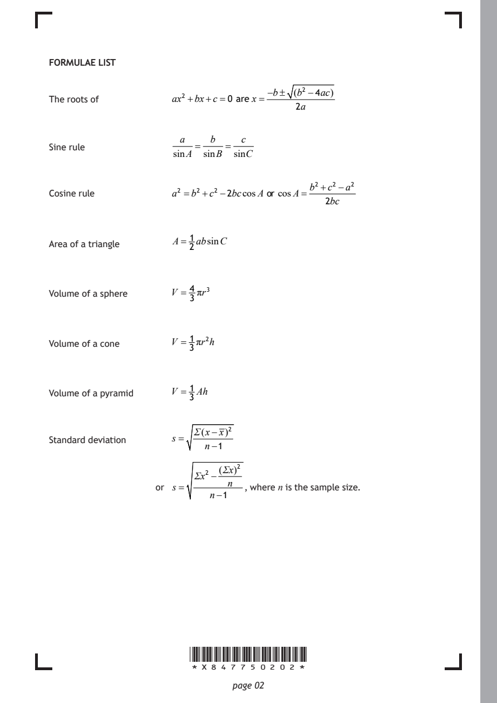
Selectable page text
FORMULAE LIST
−b± (b² −4ac)
The roots of ax² +bx+c=0 are x=
2a
a b c
Sine rule = =
sinA sinB sinC
b² +c²−a²
Cosine rule a² =b²+c² −2bccosA or cosA=
2bc
1
A= absinC
Area of a triangle
2
4
Volume of a sphere V = πr³
3
1
Volume of a cone V = πr²h
3
1
Volume of a pyramid V = Ah
3
Σ(x−x)²
Standard deviation s =
n−1
(Σx)²
Σx² −
n
or s = , where n is the sample size.
n−1
*X847750202*
page 02PDF page 3
Paper 2, Question 1Paper 2, Question 2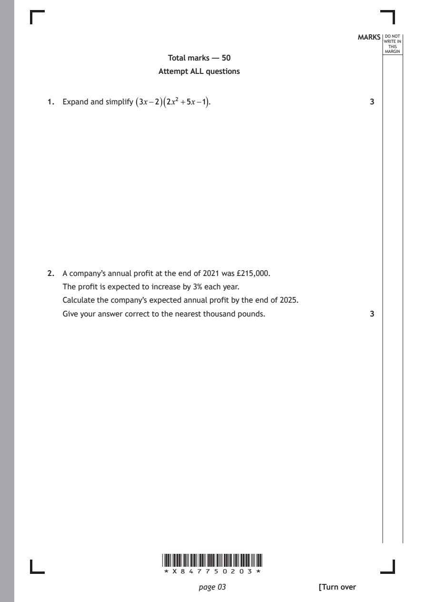
Selectable page text
MARKS _{W}^{D}_{R}^{O}_{I} _{T}^{N}OT
E IN
THIS
MARGIN
Total marks — 50
Attempt ALL questions
1. Expand and simplify ( 3x−2 )( 2x² +5x−1 ) . 3
2. A company’s annual profit at the end of 2021 was £215,000.
The profit is expected to increase by 3% each year.
Calculate the company’s expected annual profit by the end of 2025.
Give your answer correct to the nearest thousand pounds. 3
*X847750203*
page 03 [Turn overPDF page 4
Paper 2, Question 3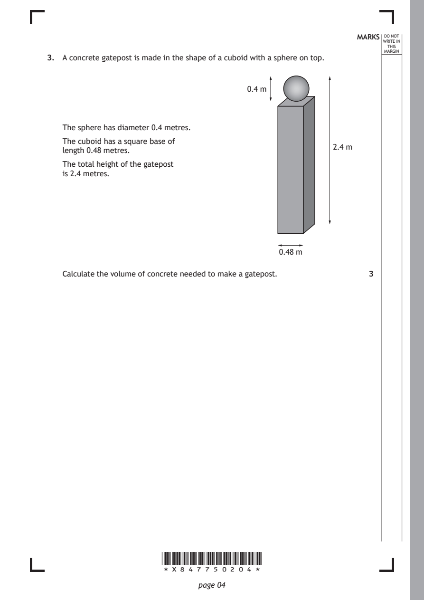
Selectable page text
MARKS _{W}^{D}_{R}^{O}_{I} _{T}^{N}OT
E IN
THIS
MARGIN
3. A concrete gatepost is made in the shape of a cuboid with a sphere on top.
0.4 m
The sphere has diameter 0.4 metres.
The cuboid has a square base of
2.4 m
length 0.48 metres.
The total height of the gatepost
is 2.4 metres.
0.48 m
Calculate the volume of concrete needed to make a gatepost. 3
*X847750204*
page 04PDF page 5
Paper 2, Question 4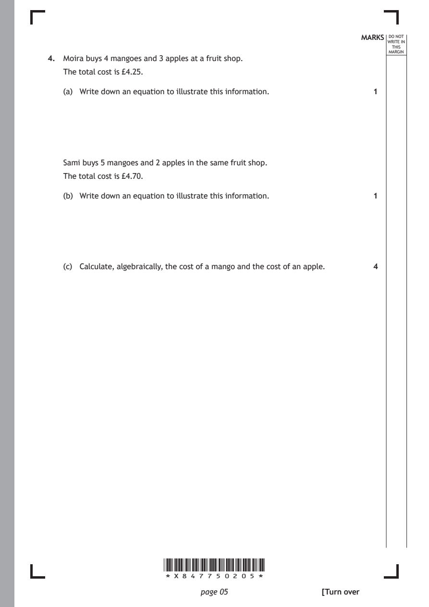
Selectable page text
MARKS _{W}^{D}_{R}^{O}_{I} _{T}^{N}OT
E IN
THIS
MARGIN
4. Moira buys 4 mangoes and 3 apples at a fruit shop.
The total cost is £4.25.
(a) Write down an equation to illustrate this information. 1
Sami buys 5 mangoes and 2 apples in the same fruit shop.
The total cost is £4.70.
(b) Write down an equation to illustrate this information. 1
(c) Calculate, algebraically, the cost of a mango and the cost of an apple. 4
*X847750205*
page 05 [Turn overPDF page 6
Paper 2, Question 5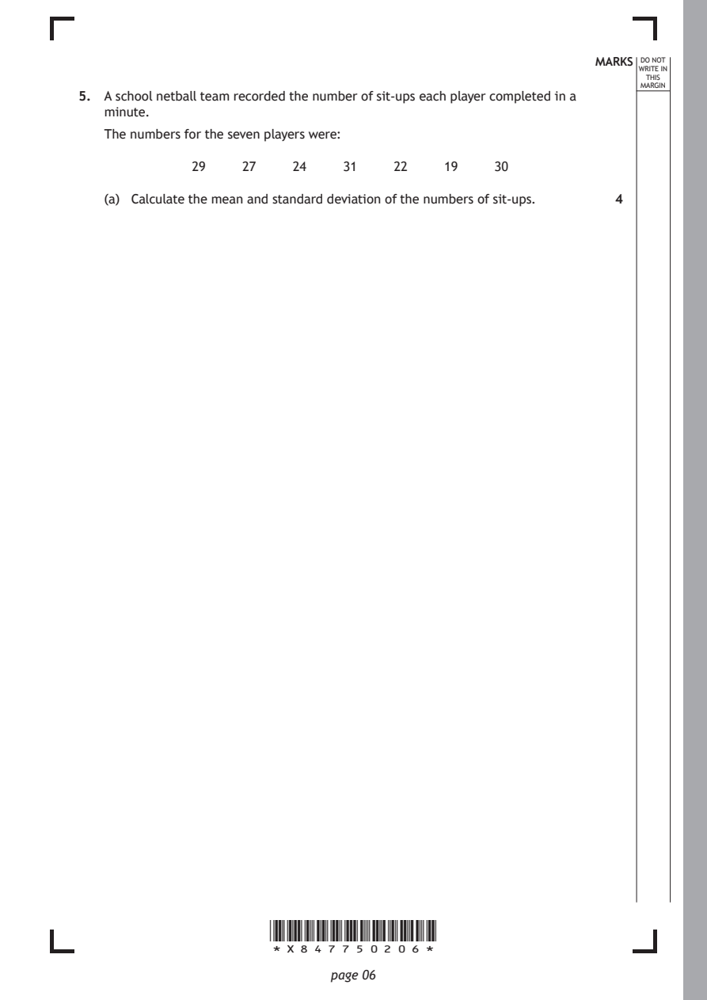
Selectable page text
MARKS _{W}^{D}_{R}^{O}_{I} _{T}^{N}OT
E IN
THIS
MARGIN
5. A school netball team recorded the number of sit‑ups each player completed in a
minute.
The numbers for the seven players were:
29 27 24 31 22 19 30
(a) Calculate the mean and standard deviation of the numbers of sit‑ups. 4
*X847750206*
page 06PDF page 7
Paper 2, Question 6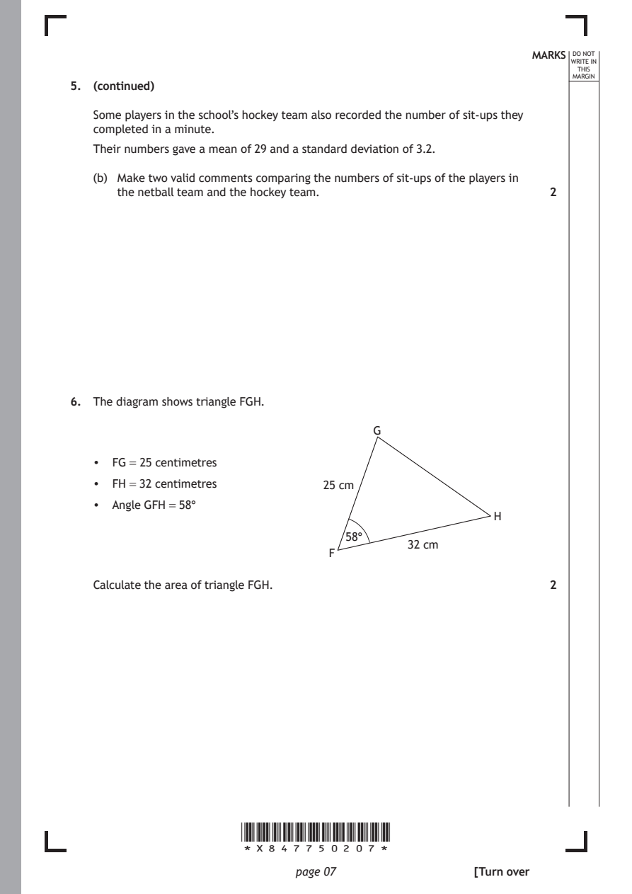
Selectable page text
MARKS _{W}^{D}_{R}^{O}_{I} _{T}^{N}OT
E IN
THIS
MARGIN
5. (continued)
Some players in the school’s hockey team also recorded the number of sit‑ups they
completed in a minute.
Their numbers gave a mean of 29 and a standard deviation of 3.2.
(b) Make two valid comments comparing the numbers of sit‑ups of the players in
the netball team and the hockey team. 2
6. The diagram shows triangle FGH.
G
• FG = 25 centimetres
• FH = 32 centimetres 25 cm
• Angle GFH = 58°
H
58°
32 cm
F
Calculate the area of triangle FGH. 2
*X847750207*
page 07 [Turn overPDF page 8
Paper 2, Question 7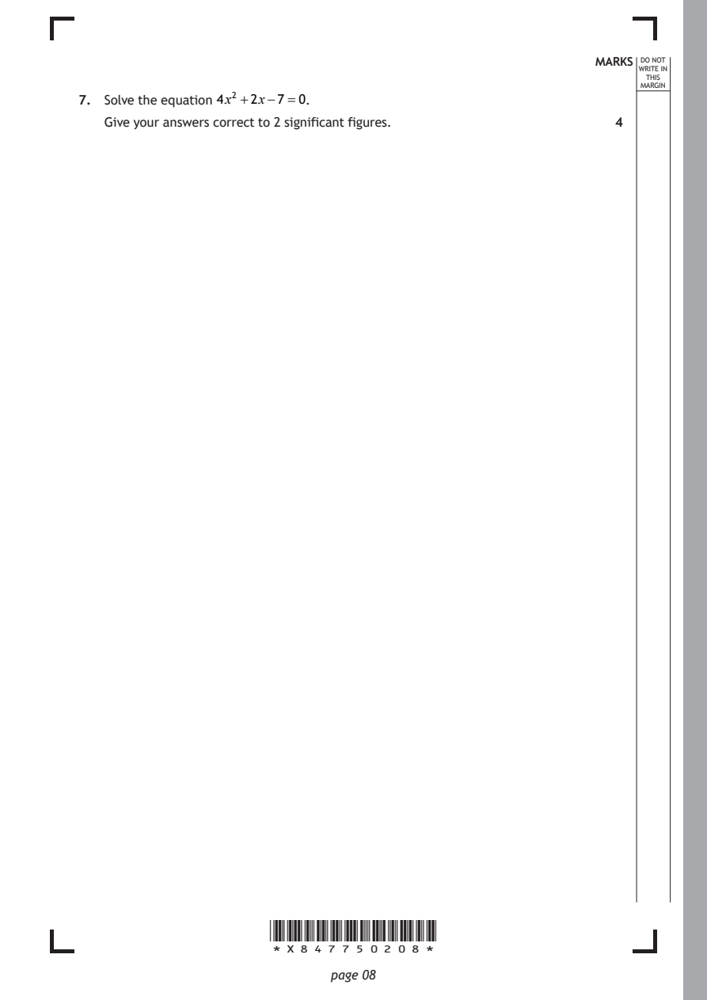
Selectable page text
MARKS _{W}^{D}_{R}^{O}_{I} _{T}^{N}OT
E IN
THIS
MARGIN
7. Solve the equation 4x² +2x−7 =0.
Give your answers correct to 2 significant figures. 4
*X847750208*
page 08PDF page 9
Paper 2, Question 8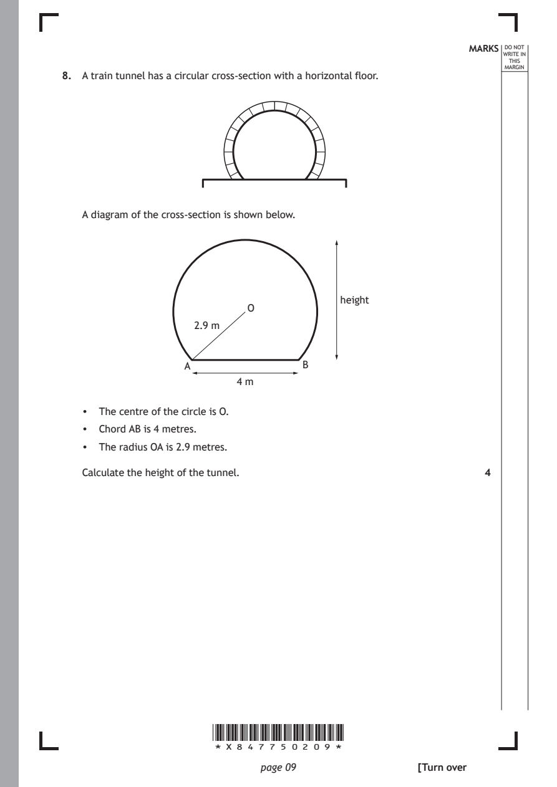
Selectable page text
MARKS _{W}^{D}_{R}^{O}_{I} _{T}^{N}OT
E IN
THIS
MARGIN
8. A train tunnel has a circular cross‑section with a horizontal floor.
A diagram of the cross‑section is shown below.
height
O
2.9 m
A B
4 m
• The centre of the circle is O.
• Chord AB is 4 metres.
• The radius OA is 2.9 metres.
Calculate the height of the tunnel. 4
*X847750209*
page 09 [Turn overPDF page 10
Paper 2, Question 9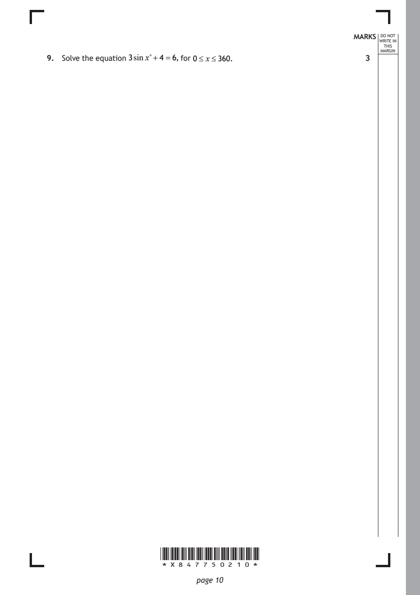
Selectable page text
MARKS _{W}^{D}_{R}^{O}_{I} _{T}^{N}OT
E IN
THIS
ARGIN
9. Solve the equation 3sinx°+4 =6, for 0≤ x≤360. 3 ^{M}
*X847750210*
page 10PDF page 11
Paper 2, Question 10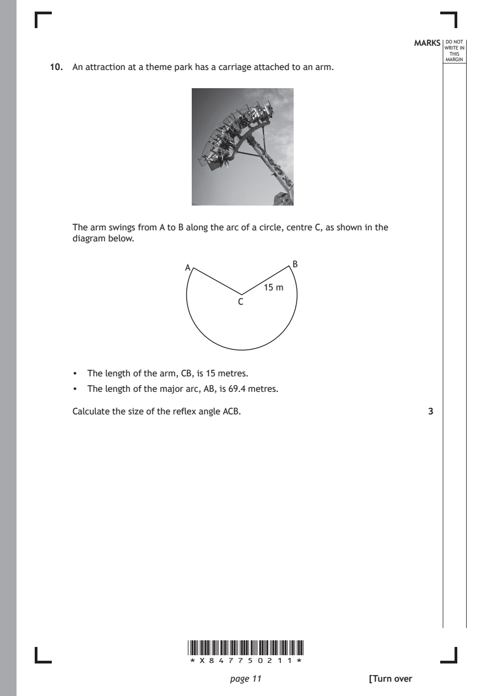
Selectable page text
MARKS _{W}^{D}_{R}^{O}_{I} _{T}^{N}OT
E IN
THIS
MARGIN
10. An attraction at a theme park has a carriage attached to an arm.
The arm swings from A to B along the arc of a circle, centre C, as shown in the
diagram below.
B
A
15 m
C
• The length of the arm, CB, is 15 metres.
• The length of the major arc, AB, is 69.4 metres.
Calculate the size of the reflex angle ACB. 3
*X847750211*
page 11 [Turn overPDF page 12
Paper 2, Question 11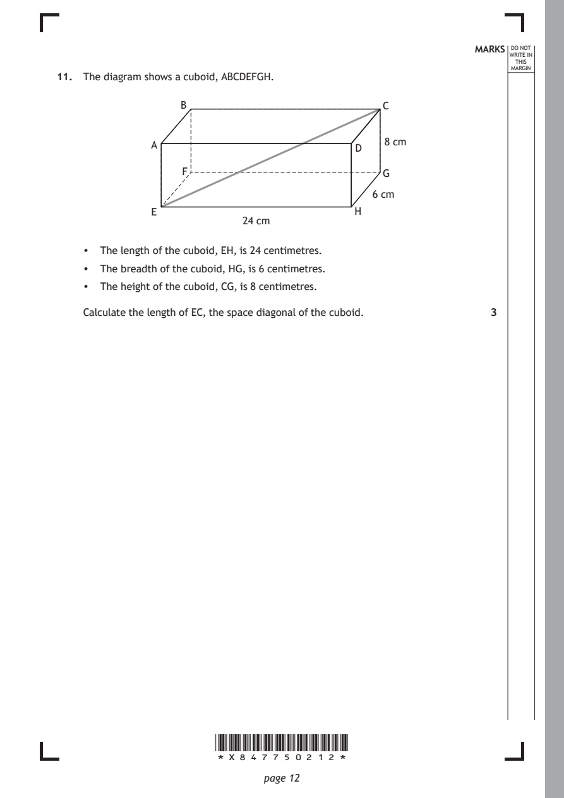
Selectable page text
MARKS _{W}^{D}_{R}^{O}_{I} _{T}^{N}OT
E IN
THIS
MARGIN
11. The diagram shows a cuboid, ABCDEFGH.
B C
8 cm
A
D
F G
6 cm
E H
24 cm
• The length of the cuboid, EH, is 24 centimetres.
• The breadth of the cuboid, HG, is 6 centimetres.
• The height of the cuboid, CG, is 8 centimetres.
Calculate the length of EC, the space diagonal of the cuboid. 3
*X847750212*
page 12PDF page 13
Paper 2, Question 12Paper 2, Question 13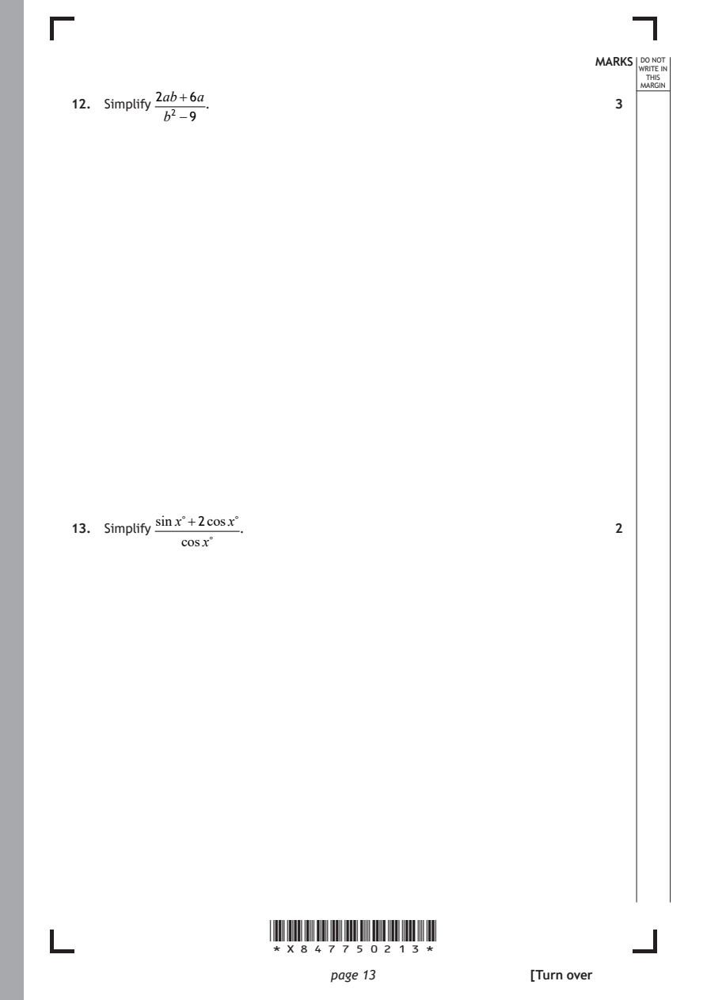
Selectable page text
MARKS _{W}^{D}_{R}^{O}_{I} _{T}^{N}OT
E IN
THIS
MARGIN
2ab+6a
12. Simplify . 3
b² −9
sinx°+2cosx°
13. Simplify . 2
cosx°
*X847750213*
page 13 [Turn overPDF page 14
Paper 2, Question 14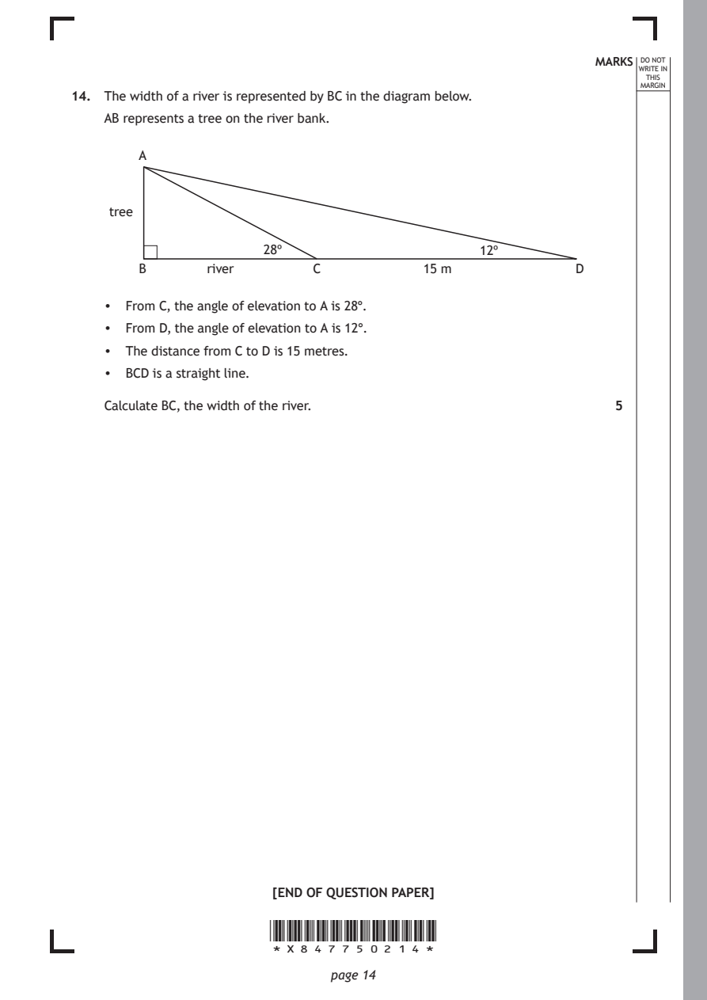
Selectable page text
MARKS _{W}^{D}_{R}^{O}_{I} _{T}^{N}OT
E IN
THIS
MARGIN
14. The width of a river is represented by BC in the diagram below.
AB represents a tree on the river bank.
A
tree
28º 12º
B river C 15 m D
• From C, the angle of elevation to A is 28°.
• From D, the angle of elevation to A is 12°.
• The distance from C to D is 15 metres.
• BCD is a straight line.
Calculate BC, the width of the river. 5
[END OF QUESTION PAPER]
*X847750214*
page 14PDF page 15

Selectable page text
MARKS _{W}^{D}_{R}^{O}_{I} _{T}^{N}OT
E IN
THIS
MARGIN
ADDITIONAL SPACE FOR ANSWERS
*X847750215*
page 15PDF page 16
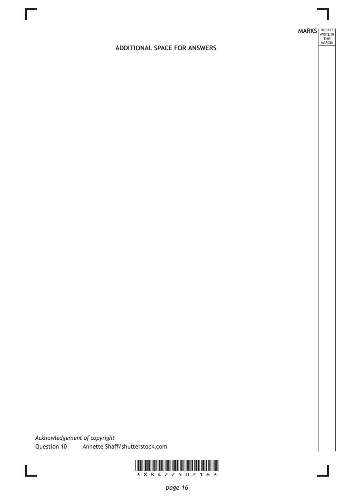
Selectable page text
MARKS _{W}^{D}_{R}^{O}_{I} _{T}^{N}OT
E IN
THIS
MARGIN
ADDITIONAL SPACE FOR ANSWERS
Acknowledgement of copyright
Question 10 Annette Shaff/shutterstock.com
*X847750216*
page 16